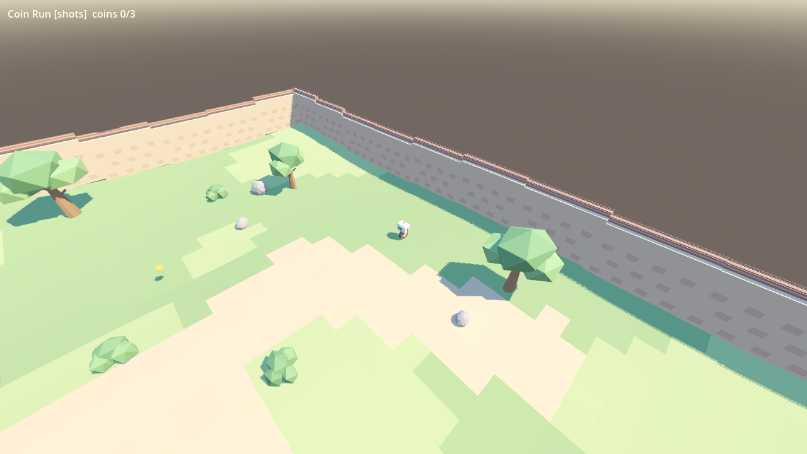
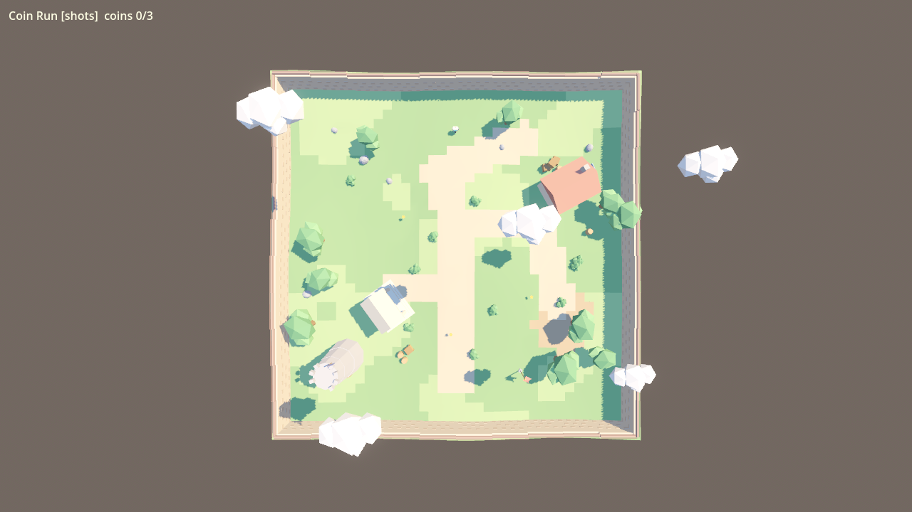

依 .spec/PLAYBOOK_v2.1.md 以 Blender × Godot MCP 全自動管線製作：14 個規格驅動資產、layout.json 版面、物理/收集玩法、bot 與物理自動化測試。模型：qwen3.8-flash-next-iq3_s（max）。


| 項目 | 結果 |
|---|---|
| 資產三階段規格檢查（Blender/glb/Godot） | 14/14 PASS |
| 物理測試（specs/physics_tests.json 門檻） | 7/7 PASS |
| bot 通關測試（--mode bot） | 3 幣 + VICTORY，exit 0 |
| Godot MCP 實際執行 | 0 errors / 0 warnings |
| 迴圈演練（金幣縮至 60%） | FAIL→修→PASS→重測通過 |
godot --path godot godot --path godot -- --mode bot # bot 自動通關
按鍵：方向鍵移動、A 加速、B 煞車、Space 跳。收集 3 金幣後碰旗勝利。